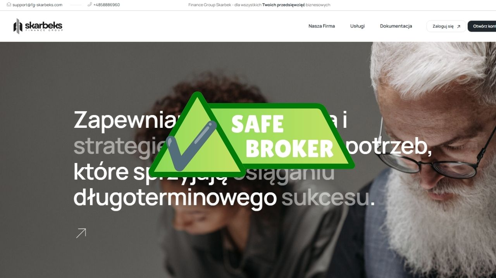

Finance Group Skarbek: Przejrzysty broker oferujący fachowe doradztwo i usługi zorientowane na klienta
Kompleksowa analiza przedsiębiorstwa | Zwalczanie oszustw | Bezpieczna inwestycja
Kompleksowa analiza przedsiębiorstwa | Zwalczanie oszustw | Bezpieczna inwestycja
Finance Group Skarbek — nowoczesna platforma dla pewnego tradingu. Wybór firmy brokerskiej to ważny krok dla każdego inwestora, a spośród wielu ofert na rynku Finance Group Skarbek wyróżnia się połączeniem wygody, przejrzystości i dbałości o klienta.
Jedną z głównych zalet firmy jest dedykowany opiekun konta. Od pierwszego dnia klient otrzymuje osobistego specjalistę, który pomaga zapoznać się z platformą, odpowiada na pytania i towarzyszy klientowi na wszystkich etapach pracy z portfelem. Takie podejście jest szczególnie cenne dla początkujących: zamiast rozwiązywać wszystko samodzielnie, otrzymujesz wsparcie doświadczonej osoby, która naprawdę zna się na rzeczy.
W tradingu czas ma znaczenie i tutaj Finance Group Skarbek zasługuje na pochwałę. Doładowanie konta przebiega szybko i bez zbędnych komplikacji — środki są księgowane niemal natychmiast, co pozwala nie przegapić korzystnych momentów na rynku. Wypłaty również są zorganizowane sprawnie: zgłoszenia są realizowane w krótkim czasie, a klient zawsze wie, czego się spodziewać.
Interfejs platformy jest przemyślany w najmniejszych szczegółach — nawet bez bogatego doświadczenia w tradingu poradzenie sobie z nim nie sprawia trudności. Przejrzysta struktura prowizji i uczciwe warunki budują zaufanie: nie ma tu niespodzianek w postaci ukrytych opłat.
Finance Group Skarbek to firma, która stawia na obsługę klienta i sprawność działania. Opiekun konta, szybkie depozyty i wypłaty, wygodna platforma — wszystko to tworzy komfortowe warunki zarówno dla początkujących, jak i doświadczonych traderów. Jeśli szukasz niezawodnego partnera do zarządzania inwestycjami, warto rozważyć tę firmę.
